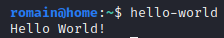

Install Keepnote :
wget -P ~/Téléchargements http://keepnote.org/download-test/keepnote-0.7.9.tar.gz
tar -xvf ~/Téléchargements/keepnote-0.7.9.tar.gz -C ~/Pkgs
cd ~/Pkgs/keepnote-0.7.9
cat ~/Pkgs/keepnote-0.7.9/INSTALL
sudo apt-get install python python-gtk2 python-glade2 libgtk2.0-dev
python setup.py install
keepnote
----------
Install shutter :
sudo apt-get update
sudo apt-get install snapd
sudo systemctl enable --now snapd apparmor
reboot
gedit ~/.bashrc- # set PATH so it includes snap bin if it exists
- if [ -d "/snap/bin" ] ; then
PATH="/snap/bin:$PATH"
export PATH=$PATH:/snap/bin
. ~/.bashrc
######Test snap
######sudo snap install hello-world
######hello-world
sudo snap install shutter
(optional)
touch ~/Pkgs/bin/screen
gedit ~/Pkgs/bin/screen &- #!/bin/bash
- nohup shutter &> ~/nohup.out &
sudo chmod +x ~/Pkgs/bin/screen
. ~/.bashrc
----------
